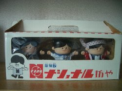
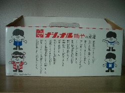
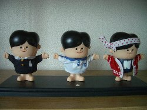
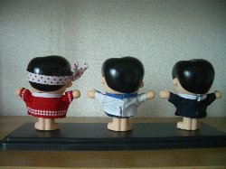
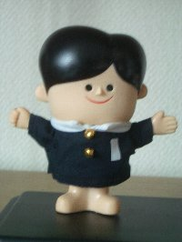
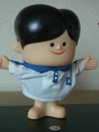
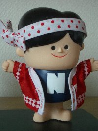
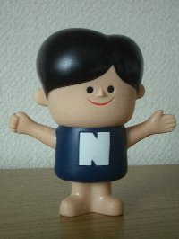
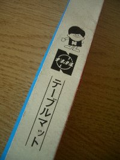
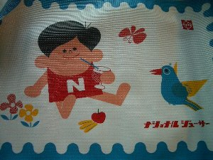

collection
- ■サトちゃん
- ■ピョンちゃん
- ■コルゲンのカエル
- ■オリエンタル坊や
- ■薬局マスコット
- ■企業マスコット
- ■ストラップ
- □時にはtrip,時にはtravel!
（マスコット旅行記）
- □blog
- □link
- □当サイトについて
- □privacypolicy
- □sitemap
- □top
- 企業マスコットグッズもくじ
 トリスウイスキーアンクルトリス トリスウイスキーアンクルトリス- 安田信託銀行オヨネコぶーにゃん
- 文明堂カンカンベア
- 住友銀行くまのバンクー
- ヤマト運輸クロネコ
- スキー毛糸スキー坊や
- DCカードDCカードのカッパ
- 松下電器産業ナショナル坊や
- 日本ビクターニッパー犬
- ダイキンぴちょんくん
- 不二家ペコちゃん
- ミスタードーナツポン・デ・ライオン
- ヤンマーヤン坊マー坊
- ライオンライオンちゃん
- JR東日本Suicaペンギン
- その他（分類しないもの）
 企業マスコットindex 企業マスコットindex- top
- sitemap
|
ナショナル坊や
 
復刻版ナショナル坊や（2003年入手）
 
以前プレゼントされたものです。
  

ナショナル坊やは、昭和30年代に誕生したそうです。
もともとトマト坊やというキャラクターだったそう。
 
ナショナルジューサーのテーブルマット
レトロな感じがとてもかわいいです。
松下電器産業はパナソニックに社名を変更したけれど、
ナショナル坊やは消えて欲しくないキャラクターです･･･。
2008  なないろまーぶる なないろまーぶる
当サイトの画像および文章の無断転載はお断りいたします。
|